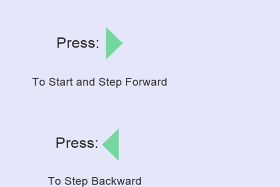

DeQueue:
DeQueue is an acronym for Double Ended Queue.It is a Linear Data Structure similar to Queue except, here insertion and deletion occur at both ends i.e.Enqueue and Dequeue can happen at both rear and front end
DeQueue Operations:
EnqueueFront(): Inserts at the front of the de_que.
EnqueueRear(): Inserts at rear of the de_que
DequeueFront(): Deletes at the front of the de_que
DequeueRear(): Deletes at the rear of the de_que

Application of Dequeue:
It can be used to implement Stack and Queue
It is used in A-Steal job scheduling algorithm e.t.c.
Priority Queue:
A priority queue is a linear Data Strucure of elements in which each element has been
assigned with certain priority and the order by which elements are
processed should follow the following rule:
(1) An element of higher priority is processed before any element of lower priority.
(2) Two elements with the same priority are processes according to the order in
which they were added to the queue.
e.g
In a time sharing system, programs of high priority are processed first, and programs with the same priority form a standard queue.